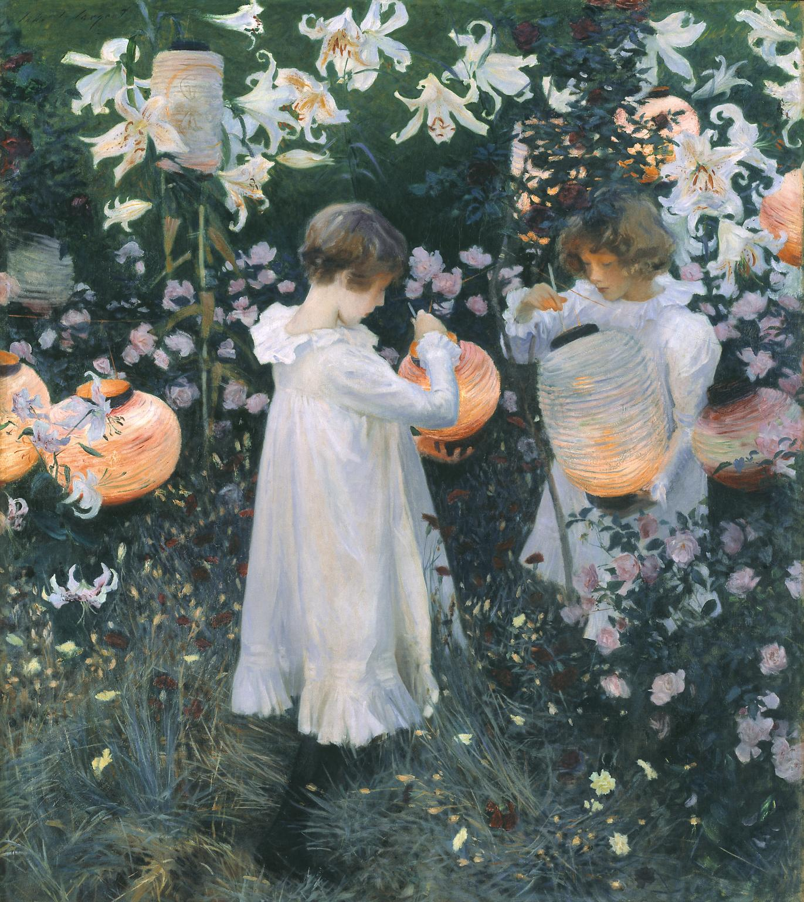

John Singer Sargents
Carnation, Lily, Lily, Rose
1885–6

Image released under Creative Commons CC-BY-NC-ND (3.0 Unported)
License this image
-
Read more
The inspiration for this picture came during a boating expedition Sargent took on the Thames at Pangbourne in September 1885, with the American artist Edwin Austin Abbey, during which he saw Chinese lanterns hanging among trees and lilies. He began the picture while staying at the home of the painter F.D. Millet at Broadway, Worcestershire, shortly after his move to Britain from Paris. At first he used the Millets's five-year-old daughter Katharine as his model, but she was soon replaced by Polly and Dorothy (Dolly) Barnard, the daughters of the illustrator Frederick Barnard, because they had the exact haircolour Sargent was seeking. Dolly, aged eleven, is on the left; Polly, aged seven, is on the right. A sketchbook at the Fogg Museum, Cambridge, includes Sargent's outline designs for the painting, and two drawings at the Tate (Tate Gallery A00850-1) record the precise poses he required for the girls' profiles.
He worked on the picture, one of the few figure compositions he ever made out of doors in the Impressionist manner, from September to early November 1885, and again at the Millets's new home, Russell House, Broadway, during the summer of 1886, completing it some time in October. Sargent was able to work for only a few minutes each evening when the light was exactly right. He would place his easel and paints beforehand, and pose his models in anticipation of the few moments when he could paint the mauvish light of dusk. As autumn came and the flowers died, he was forced to replace the blossoms with artificial flowers. His friend Edmund Gosse recorded Sargent's working method:
hideInstantly, he took up his place at a distance from the canvas, and at a certain notation of the light ran forward over the lawn with the action of a wag-tail, planting at the same time, rapid dabs of paint on the picture, and then retiring again, only, with equal suddenness, to repeat the wag-tail action. All this occupied but two or three minutes, the light rapidly declining, and then, while he left the young ladies to remove his machinery, Sargent would join us again, so long as the twilight permitted, in a last turn at lawn tennis.(quoted in Charteris, pp.74-5)
Edwin Howland Blashfield, a member of the artists' colony at Broadway that year, recalled that when he saw the canvas each morning, the previous evening's work seemed to have been scraped off, and that this happened repeatedly at each stage. Sargent cut two feet off the left side of the canvas, leaving it approximately square, in order to concentrate the composition.
The picture was both acclaimed and decried at the 1887 Royal Academy exhibition. The title comes from the song 'The Wreath', by the eighteenth-century composer of operas Joseph Mazzinghi, which was popular in the 1880s. Sargent and his circle frequently sang around the piano at Broadway. The refrain of the song asks the question 'Have you seen my Flora pass this way?' to which the answer is 'Carnation, Lily, Lily, Rose'.The picture was bought for the Tate Gallery in 1887, under the terms of the Chantrey bequest, largely at the insistence of the Royal Academy President, Sir Frederic Leighton. A portrait by Sargent of Mrs Barnard (1885), made at the same time as Carnation, Lily, Lily, Rose, is also in the Tate (Tate Gallery N05901).
Further reading
The Hon. Evan Charteris, John Sargent, London 1927, pp.74-5, 78, 83-4, 96, 178, 252
Mary Chamot, Dennis Farr and Martin Butlin, Tate Gallery Catalogues: The Modern British Paintings, Drawings and Sculpture, II, London 1965, pp.587-8Terry Riggs
February 1998 -
This painting is set in a garden in the Cotswolds village of Broadway, where John Singer Sargent stayed in the summer of 1885. The children lighting Japanese lanterns with tapers are Dolly (left) and Polly Barnard. Their father was the illustrator Frederick Barnard – a friend of Sargent’s. Sargent wanted to capture the exact level of light at dusk so he painted the picture out of doors, in the impressionist manner. As autumn came and the flowers died he resorted to painting flowers in pots. The title comes from the refrain of a popular song The Wreath by Joseph Mazzinghi.
Gallery label, November 2016
-
Read more
N01615 CARNATION, LILY, LILY, ROSE 1885–6
Inscr. ‘John S. Sargent’ t.l.
Canvas, 68 1/2×60 1/2 (174×154); a 3/4 (2) wide painted strip turned over along top and left edges.
Chantrey Purchase from the artist 1887.
Exh: R.A., 1887 (359); R.A., winter 1926 (47).
Lit: E. V.Lucas, Edwin Austin Abbey, R.A., 1, 1921, p.151; Downes, 1925, pp.24–5, 140–1; Charteris, 1927, pp.72, 73–5, 78, 84–5, 96, 178–9, 282–3; Mount, 1955, pp.101–4, 108, 110–12, 114, 411–12; McKibbin, 1956, pp.83, 87; Mount, 1957, pp.85–8, 91, 93–4, 96–7, 102, 333, repr. pl.5; Mount, Art Quarterly, XXVI, 1963, p.406.
Repr: Art Journal, 1888, facing p.65; Wood, n.d., p.40 (in colour); Pousette-Dart, 1924, n.p.; Manson and Meynell, 1927, n.p.This is one of the few finished pictures the artist painted out of doors in England. The scene is of two white-clad children in a garden lighting Chinese lanterns among the flowers on a twilit summer evening. The idea for the lighting effect in this picture came to the artist while on a boating trip with Edwin Abbey in 1885. One September evening by the Thames at Pangbourne he saw Chinese lanterns hung among the trees and beds of lilies. Charteris points out, however, that a sketch made at Lavington Rectory in 1884 for the portrait of ‘Vincent Cartwright Vickers and Dorothy Vickers’ anticipates the composition of ‘Carnation, Lily, Lily, Rose’ in so far as it shows two children walking in a garden with a watering-can against a background of tall white lilies (repr. in Studio, XC, 1925, p.79; measures 53 1/2×35 1/2 in., and apparently shown in the R.A. memorial exhibition, 1926, although not listed in the catalogue).
hideThe artist went on from Pangbourne to stay with Mr and Mrs F. D. Millet at Farnham House, Broadway, Worcestershire, and began work on the large canvas, choosing for his model the Millets' small daughter, Katharine. Miss Millet, then aged five, was superseded by Polly and Dorothy (Dolly) Barnard, daughters of Frederick Barnard, the illustrator, who was living near by (for a portrait of Mrs Barnard, see N05901). Dorothy aged eleven is on the left, and Polly, aged seven, on the right. Their hair was exactly the colour Sargent wanted and, in order to catch them in natural poses he made many pencil studies and sketches of them on the spot as they played, two of which are in the Tate, A00850 and A00851.
Sargent worked on this picture from September (letter of 10 September [1885] from Sargent to Edward Russell, in Tate Gallery archives and quoted in extenso by Mount, 1955, p.104 and 1957, pp.87–8) until early November 1885 and again at the Millets' new home, Russell House, Broadway, during the summer of 1886, finishing it some time in October of that year. Progress was necessarily slow, for the picture was painted out of doors and work could only proceed for a few minutes each evening when the right kind of mauvish light was present. Artificial flowers replaced the dying natural blossoms as autumn approached. Mount notes (1955, pp.111–12, 412) that Edwin Howland Blashfield, one of the group of artists working at Broadway in 1885, recalled that when he saw the canvas each morning it appeared to have been scraped down so that all the previous night's work was erased, and that this happened again and again. Furthermore, Sargent reduced the canvas by 2 ft. cut from the left, leaving it approximately square, and thereby concentrated the composition which until then had dissatisfied him.
A list of five oil studies, two measuring 28×18 in. (formerly in Mrs F. D. Millet's collection), and a larger version, 53 1/2×35 1/2 in. (Master and Miss Vickers, see above), is given by McKibbin, and the variations in the proportions of these works seem to suggest that it was some time before Sargent decided upon the shape of the composition. The version (23 1/2×19 1/2in.) formerly belonging to Sir Alan Parsons was sold at Sotheby's, 21 November 1962 (56), bt. Patch for Newhouse Galleries, New York (repr. The Ivory Hammer; the year at Sotheby's 219th Season 1962–63, 1963, p.53). A sixth study, not traced, was shown at Copley Hall, Boston, 1899; this and a study of ‘Poppies’, 24×36 in., which was sold with the two studies belonging to Mrs Millet at Sotheby's, 10 June 1942 (88), are not mentioned by McKibbin.
The title of the painting is taken from a line of a popular song, identified by McKibbin as ‘The Wreath’ by Joseph Mazzinghi, in which the question ‘Have you seen my Flora pass this way?’ is answered with the words ‘Carnation, Lily, Lily, Rose’ (quoted Charteris, p.78). A parody of this title, almost certainly wrongly attributed to J. McN. Whistler, was ‘Darnation, Silly, Silly Pose’; indeed Charteris (pp.178–9) has suggested that Sargent was himself responsible for it, remarking on his habit of bestowing mock titles on his work
Published in:
Mary Chamot, Dennis Farr and Martin Butlin, The Modern British Paintings, Drawings and Sculpture, London 1964, II
-
artist
John Singer Sargent
1856–1925 -
medium
Oil paint on canvas
-
dimensions
Support: 1740 x 1537 mm
frame: 2185 x 1970 x 130 mm -
collection
Tate
-
acquisition
Presented by the Trustees of the Chantrey Bequest 1887
-
reference
T07573